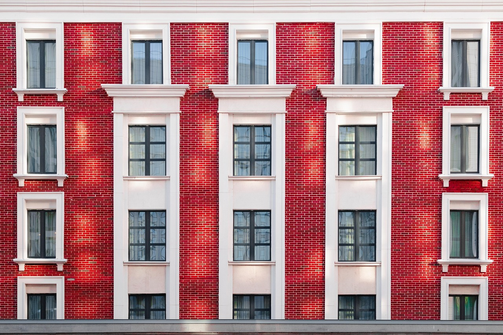
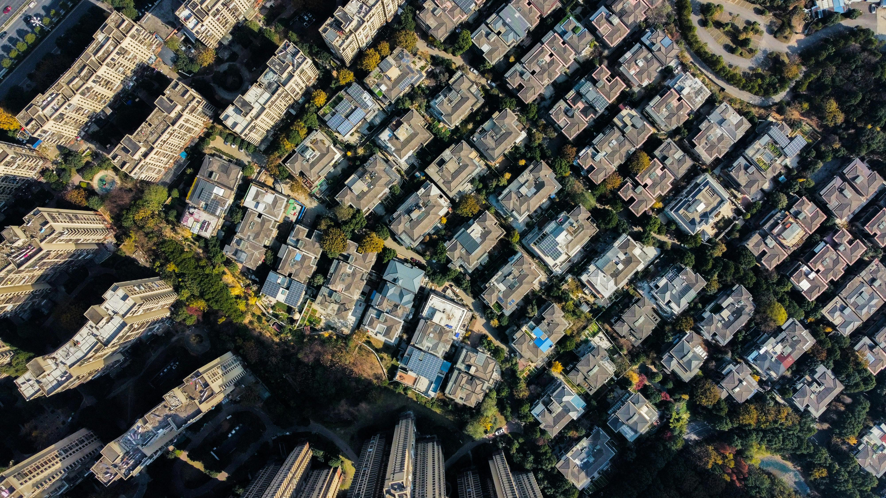
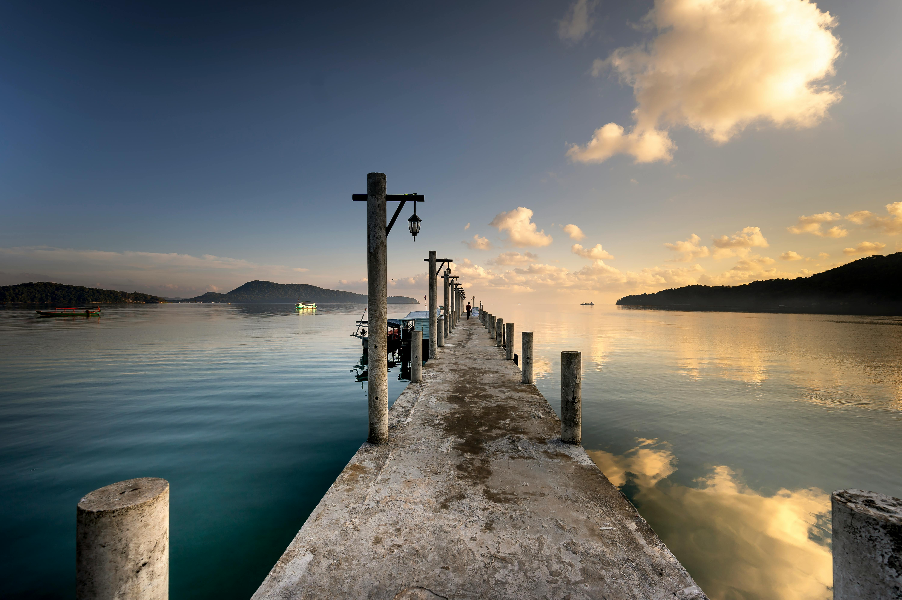
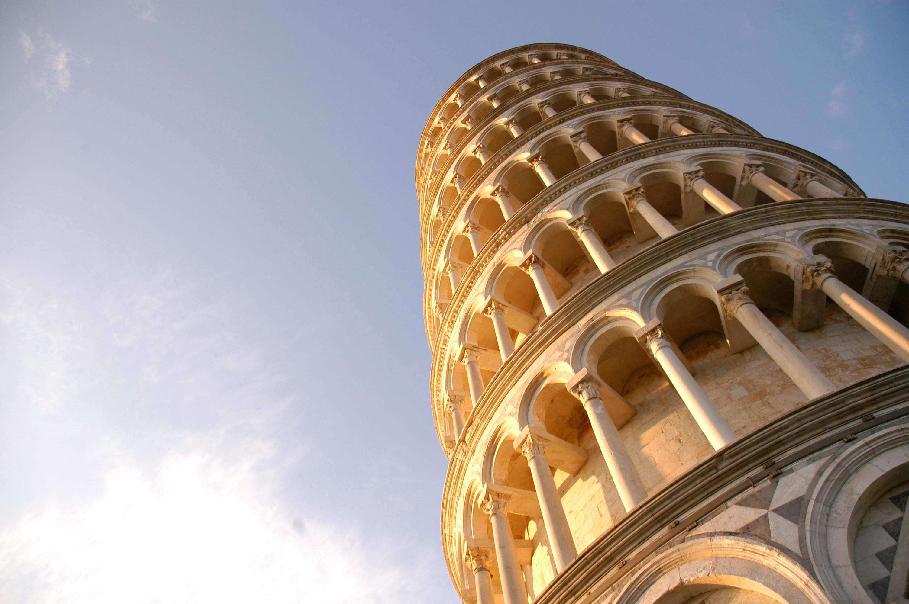

The photo uses identical buildings on both sides and a central pathway to create a perfect symmetrical structure, evoking a strong sense of order and visual balance.
这张照片通过两侧相同的建筑和中间的通道，形成了一个完美的对称结构，营造出强烈的秩序感与视觉平衡。

This photo is captured from a top-down perspective, revealing the organized patterns and rhythm of the cityscape. The bird’s-eye composition allows viewers to see shapes and spatial relationships that are usually hidden, creating a sense of scale and detachment.
这张照片以高空俯视的角度拍摄，展现了城市建筑整齐排列的结构与节奏。顶视构图让观众从“上帝视角”观察世界，能够看到平时难以察觉的形状与空间关系 带来一种宏观、冷静又客观的视觉体验。

This photo uses the lines of the pier leading from the foreground to the horizon, guiding the viewer’s eyes naturally toward the center of the image. Leading lines create depth, direction, and a strong sense of perspective.
这张照片利用码头的线条从前景延伸到远方，形成强烈的视觉引导，让观众的视线自然被带向画面中心与地平线。引导线构图能创造深度与方向感，让画面更有层次和故事性。

This photo is taken from a low angle, making the Leaning Tower of Pisa appear taller and more powerful.Low-angle composition emphasizes the subject’s height and creates a sense of grandeur and awe.
这张照片从低处向上拍摄，使比萨斜塔显得更高大、更有气势。低角度构图能强化主体的存在感，带给观众一种仰视与震撼的视觉效果。